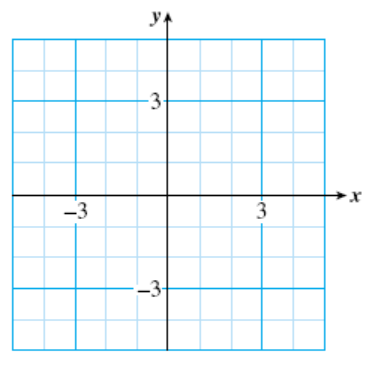

Section 1 Scratch
Subsection 1.1 Parallel and Perpendicular Lines
Lines that lie in the same plane but never intersect are called parallel lines. It is easy to understand that parallel lines have the same slope.
Checkpoint 1.1.
Calculate the slopes of the two parallel lines in the figure. (We denote the slope of the first line by \(m_1\) and the slope of the second line by \(m_2\text{.}\))
Lines that intersect at right angles are called perpendicular lines. It is a little harder to see the relationship between the slopes of perpendicular lines.
Checkpoint 1.2.
Calculate the slopes of the two perpendicular lines in the figure.
In the Checkpoint above, note that the product of \(m_1\) and \(m_2\) is \(-1\text{,}\) that is,
This relationship holds for any pair of perpendicular lines.
Parallel and Perpendicular Lines.
-
Two lines are parallel if their slopes are equal, that is, if
\begin{equation*} \blert{m_1 = m_2} \end{equation*}or if both lines are vertical.
-
Two lines are perpendicular if the product of their slopes is \(-1\text{,}\) that is, if
\begin{equation*} \blert{m_1 m_2 = -1} \end{equation*}or if one of the lines is horizontal and one is vertical.
Reading Questions Reading Questions
1.
What do we call two lines that lie in the same plane but never intersect?
Parallel lines
2.
What are perpendicular lines?
Lines that intersect at right angles
Example 1.3.
Decide whether the lines
are parallel, perpendicular, or neither.
We could graph the lines, but we can't be sure from a graph if the lines are exactly parallel or exactly perpendicular. A more accurate way to answer the question is to find the slope of each line. To do this we write each equation in slope-intercept form, that is, we solve for \(y\text{.}\)
The slope of the first line is \(\dfrac{-2}{3}\text{,}\) and the slope of the second line is \(\dfrac{3}{2}\text{.}\) The slopes are not equal, so the lines are not parallel. However, the product of the slopes is
so the lines are perpendicular.
Look Closer.
Another way to state the condition for perpendicular lines is
Because of this relationship, we often say that the slope of one perpendicular line is the negative reciprocal of the other.
Reading Questions Reading Questions
3.
What is true about the slopes of parallel lines?
They are equal.
4.
What do we call the slopes of perpendicular lines?
Negative reciprocals
Subsection 1.2 Equations for Horizontal and Vertical Lines
In [cross-reference to target(s) "Slope" missing] we learned that the slope of a horizontal line is zero. What does this tell us about the equation of a horizontal line that passes through a particular point?
Example 1.4.
Find the equation of the horizontal line that passes through \((5,3)\text{.}\)
Looking at the graph of the line shown below, we see that the \(y\)-coordinate of every point on the line is 3.
In particular, the \(y\)-intercept of the line is the point \((0,3)\text{,}\) so \(b=3\text{.}\) As we noted above, the slope of the line is \(m=0\text{.}\) Substituting these values into the slope-intercept form gives us the equation
or just \(y=3\text{.}\) The fact that \(x\) does not appear in the equation means that \(y=3\) for every point on the line, no matter what the value of \(x\) is.
Look Closer.
What about the equation of a vertical line? The slope of a vertical line is undefined; a vertical line does not have a slope. We cannot use the slope-intercept form to write the equation of a vertical line. However, we can use what we learned about horizontal lines in Example 1.4.
Look at the graph of the vertical line at right. Every point on the line has \(x\)-coordinate \(-2\text{,}\) no matter what the \(y\)-coordinate is. An equation for this line is \(x=-2\text{.}\) The value of \(x\) does not depend upon \(y\text{;}\) it is constant, so \(y\) does not appear in the equation.

Note 1.5.
We make two observations about the examples above.
- The \(y\)-intercept of the horizontal line \(y=3\) is \((0,3)\text{;}\) it has no \(x\)-intercept.
- The \(x\)-intercept of the vertical line \(x=-2\) is \((-2,0)\text{;}\) it has no \(y\)-intercept.
Horizontal and Vertical Lines.
-
The equation of the horizontal line passing through \((0,b)\) is
\begin{equation*} \blert{y=b} \end{equation*} -
The equation of the vertical line passing through \((a,0)\) is
\begin{equation*} \blert{x=a} \end{equation*}
Caution 1.6.
The equation for a line is not the same thing as the slope of the line!
- The slope of every horizontal line is zero, but the equation of a horizontal line has the form \(y=b\text{,}\) where \(b\) is the \(y\)-coordinate of every point on the line.
- Similarly, the equation of a vertical line has the form \(x=a\text{,}\) but the slope of a vertical line is undefined.
Reading Questions Reading Questions
5.
Give an example of an equation of a vertical line.
6.
Give an example of an equation of a horizontal line.
Subsection 1.3 Distance Between Points
It is easy to compute the distance between two points that lie on the same horizontal or vertical line. We subtract the smaller coordinate from the larger one.
Example 1.7.
The distance between the points \(A(6, \blert{5})\) and \(B(6, \blert{-7})\) in the figure is
and the distance between points \(C(\blert{-7}, -3)\) and \(D(\blert{-2}, -3)\) is
Note that the distance between two points is always a positive number. That is why we always subtract the smaller coordinate from the larger one to compute distance. However, when we compute a slope, we need more information.
Look Closer.
When we compute slope, the direction in which we move on the line makes a difference. We will call this the directed distance, and it can be either positive or negative.
If we move from \(C\) to \(D\text{,}\) we have moved in the positive \(x\)-direction, so the directed distance is positive:
If we move from \(D\) to \(C\text{,}\) we have moved in the negative \(x\)-direction, so the directed distance is negative:
Directed Distance.
To find the directed distance between two points on a number line, we subtract the initial coordinate from the final coordinate.
Reading Questions Reading Questions
7.
How do we find the distance between two points that lie on the same vertical line?
Subtract the smaller \(y\)-coordinate from the larger one
8.
A directed distance can be either or .
positive, negative
Look Ahead.
So far we have computed the slope of a line by finding \(\Delta x\) and \(\Delta y\) on the graph. Now we can use directed distance to develop a formula for slope.
Example 1.8.
Compute the slope of the line segment joining \(P\) and \(R\) in two ways:
Find \(\Delta y\) and \(\Delta x\) using the graph
Find \(\Delta y\) and \(\Delta x\) using coordinates.

-
As we move from \(P\) to \(Q\text{,}\) we move up 2 squares on the graph, so \(\Delta y = 2\text{.}\) As we move from \(Q\) to \(R\text{,}\) we move 8 squares to the right, so \(\Delta x = 8\text{.}\) Thus, the slope of the line is
\begin{equation*} m = \dfrac{\Delta y}{\Delta x} = \dfrac{2}{8} = \dfrac{1}{4} \end{equation*} -
First we write down the coordinates of \(P\) and \(Q\text{:}\)
\begin{equation*} P(-3,\blert{-4})~~~~~~\text{and}~~~~~~Q(-3,\blert{-2}) \end{equation*}and compute the directed distance from \(P\) to \(Q\text{:}\)
\begin{equation*} \Delta y = -2-(-4) = 2~~~~~~~~~~~~~~~~~~\blert{\text{final} - \text{initial}} \end{equation*}Then we write down the coordinates of \(Q\) and \(R\text{:}\)
\begin{equation*} Q(\blert{-3},-2)~~~~~~\text{and}~~~~~~R(\blert{5},-2) \end{equation*}and compute the directed distance from \(Q\) to \(R\text{:}\)
\begin{equation*} \Delta x = 5-(-3) = 8~~~~~~~~~~~~~~~~~~\blert{\text{final} - \text{initial}} \end{equation*}We get the same value for the slope as in part (a),
\begin{equation*} m = \dfrac{\Delta y}{\Delta x} = \dfrac{2}{8} = \dfrac{1}{4} \end{equation*}
Subsection 1.4 Subscript Notation
When we compute the slope of a line joining two points, we must be careful to subtract their \(x\)-coordinates and their \(y\)-coordinates in the same order, final minus initial. To distinguish between the coordinates of different points, we use a new notation called subscripts.
Subscripts.
We denote the coordinates of a particular point by \((x_1,y_1)\) and the coordinates of a second point by \((x_2,y_2)\text{.}\)
Example 1.9.
Compute the slope between point \(D\) and \(F\) in the figure.

We'll call \(D\) the first point and \(F\) the second point. Then their coordinates are
Now we can describe the formula for slope in an organized way. We compute \(\Delta y\) and \(\Delta x\) as directed distances. First, we observe that the coordinates of point \(E\) are \((-6,4)\) or \((x_1,y_2)\text{.}\) From the figure, we can see that
and
Thus, the slope of the line segment joining \(D\) and \(F\) is
Caution 1.10.
The subscript 1 on \(x_1\text{,}\) for instance, has nothing to do with the value of the coordinate; it merely identifies this coordinate as the \(x\)-coordinate of the first point.
Reading Questions Reading Questions
9.
What do the subscripts in \((x_1,y_1)\) mean?
Coordinates of the first point
10.
Write a formula for computing \(\Delta y\text{.}\)
Subsection 1.5 A New Formula for Slope
The method described in Example 1.9 gives us a new formula for computing slope.
Two-Point Formula for Slope.
The slope of the line joining points \(P_1(x_1,y_1)\) and \(P_2(x_2,y_2)\) is
We don't need a graph in order to use this formula, just the coordinates of two points on the line.
Example 1.11.
Compute the slope of the line joining the points \((6,-2)\) and \((3,-1)\text{.}\)
It doesn't matter which point is \(P_1\) and which is \(P_2\text{,}\) so we choose \(P_1\) to be \((6,-2)\text{.}\) Then \((x_1,y_1)=(6,-2)\) and \((x_2,y_2)=(3,-1)\text{.}\) Thus,
Caution 1.12.
In Example 1.11, we can reverse the order of both subtractions to find
the same answer as before. The order of the points does not matter, but we must be consistent and use the same order when computing \(\Delta y\) and \(\Delta x\text{.}\)
Reading Questions Reading Questions
11.
What is wrong with this formula for slope: \(m = \dfrac{y_2-y_1}{x_1-x_2}\text{?}\)
The \(x\)- and \(y\)-coordinates hould be subtracted in the same order.
Subsection 1.6 Skills Warm-Up
Exercises Exercises
For Problems 1-8, find the negative reciprocal.
1.
\(\dfrac{3}{4}\)2.
\(\dfrac{-1}{3}\)3.
\(-6\)4.
\(\dfrac{11}{8}\)5.
\(1\dfrac{2}{3}\)6.
\(-2\dfrac{1}{2}\)7.
\(-3.2\)8.
\(0.625\)For Problems 9-14, simplify.
9.
\(\dfrac{10-2}{2-9}\)10.
\(\dfrac{-5(-5)}{2-8}\)11.
\(\dfrac{3}{2}(4-7)+\dfrac{1}{2}\)12.
\(\dfrac{-6-(-12)}{3-(-5)}\)13.
\(-3(-4-2)-6\)14.
\(\dfrac{5}{3}(5-8)+3\)Subsubsection Answers to Skills Warm-Up
- \(\displaystyle \dfrac{-4}{3}\)
- \(\displaystyle 3\)
- \(\displaystyle \dfrac{1}{6}\)
- \(\displaystyle \dfrac{-8}{11}\)
- \(\displaystyle \dfrac{-3}{5}\)
- \(\displaystyle \dfrac{2}{5}\)
- \(\displaystyle 0.3125\)
- \(\displaystyle -1.6\)
- \(\displaystyle \dfrac{-4}{3}\)
- \(\displaystyle 0\)
- \(\displaystyle -4\)
- \(\displaystyle \dfrac{3}{4}\)
- \(\displaystyle 12\)
- \(\displaystyle -2\)
Subsection 1.7 Lesson
Subsubsection Activity 1: Parallel and Perpendicular Lines
-
Put each equation into slope-intercept form.
\begin{align*} l_1:~~2x-3y+3 \amp = 0 \amp \amp l_2:~~2x+3y-6 = 0\\ l_3:~~3x+2y-2 \amp = 0 \amp \amp l_4:~~2x-3y-2 = 0 \end{align*} - Which of the four lines in part (a) are parallel? How do you know?
- Which of the four lines in part (a) are perpendicular? How do you know?
Subsubsection Activity 2: Horizontal and Vertical Lines
-
Sketch a graph of the vertical line passing through \((-4,-1)\text{,}\) then find its equation.
What is the slope of the line?
 -
Sketch a graph of the horizontal line passing through \((-4,-1)\text{,}\) then find its equation.
What is the slope of the line?
Subsubsection Activity 3: Slope
Exercises Exercises
1.
Compute the slope of the line segment joining \(A\) and \(C\) in two ways:
-
Using the graph.
Draw the line through \(A\) and \(C\text{.}\) Use point \(B\) to find \(\Delta y\) and \(\Delta x\text{.}\)
\(\Delta y = \underline{\hspace{4.545454545454546em}},~~~~ \Delta x = \underline{\hspace{4.545454545454546em}}\)
\(m = \dfrac{\Delta y}{\Delta x} = \)
-
Using coordinates.
-
Step 1 Write down the coordinates of \(A~ \underline{\hspace{4.545454545454546em}}\)
\(\hphantom{000000}\) Write down the coordinates of \(B~ \underline{\hspace{4.545454545454546em}}\)
-
Step 2 Compute \(\Delta y\) and \(\Delta x\text{.}\)
\begin{gather*} \Delta x~ =~ \text{final} - \text{initial}~ =~ \underline{\hspace{4.545454545454546em}}\\ \Delta y~ = ~\text{final} - \text{initial}~ = ~\underline{\hspace{4.545454545454546em}} \end{gather*} -
Step 3 Compute the slope: \(~~m = \dfrac{\Delta y}{\Delta x} = \)
Do you get the same answers for parts (a) and (b)? You should!
-
2.
Follow the steps to compute the slope of the line segment joining \(H\) and \(K\text{.}\)
-
Step 1 Let \(H\) be the first point and \(K\) the second point. Write down their coordinates.
\begin{gather*} H(x_1,y_1) = \\ K(x_2,y_2) = \end{gather*} -
Step 2 Fill in the blanks:
\begin{gather*} y_2 = \underline{\hspace{4.545454545454546em}},~~y_1 = \underline{\hspace{4.545454545454546em}}\\ x_2 = \underline{\hspace{4.545454545454546em}},~~x_1 = \underline{\hspace{4.545454545454546em}} \end{gather*} -
Step 3 Compute \(\Delta y\) and \(\Delta x\text{.}\)
\begin{gather*} \Delta y~ =~ y_x-y_1~ =~ \underline{\hspace{4.545454545454546em}}\\ \Delta x~ = ~x_2-x_1~ = ~\underline{\hspace{4.545454545454546em}} \end{gather*} -
Step 4 Compute the slope: \(~~m = \dfrac{y_2-y_1}{x_2-x_1} = \)
Illustrate \(\Delta y\) and \(\Delta x\) on the graph. Is your value for the slope reasonable?
3.
Use the formula \(~~m = \dfrac{y_2-y_1}{x_2-x_1}\) to compute the slope of the line joining the points \((-4,-7)\) and \((2,-3)\text{.}\)
Subsubsection Wrap-Up
Objectives.
In this Lesson we practiced the following skills:
- Finding equations for parallel or perpendicular lines
- Finding equations for horizontal or vertical lines
- Using the slope formula
Questions.
- How can you decide if two lines are parallel, perpendicular, or neither?
- How many points do you need to find the equation of a horizontal or a vertical line?
- Explain the difference between the equation of a horizontal or vertical line and the slope of the line.
- Explain why the two-point formula for slope is the same as our old formula, \(~~m = \dfrac{\Delta y}{\Delta x}.\)
Subsection 1.8 Homework Preview
Exercises Exercises
1.
Are the lines parallel, perpendicular, or neither?
2.
Sketch a graph of each equation, label the coordinates of its intercept, and state the slope of the line.
- \(y=-6\)

- \(x=-8\)
3.
Find the slope of the line through \((-2,3)\) and \((1,-5)\text{.}\) Graph the line.
\(m = \)
4.
Find the slope of the line through \((5,-4)\) and \((-2,-4)\text{.}\) Graph the line.
\(m = \)
Subsubsection Answers to Homework Preview
- Neither
- \(\displaystyle (0,-6),~m = 0\)
- \((-2,0),~m~ \) is undefined
- \(\displaystyle m=\dfrac{-8}{3}\)
- \(~m~ \) is undefined